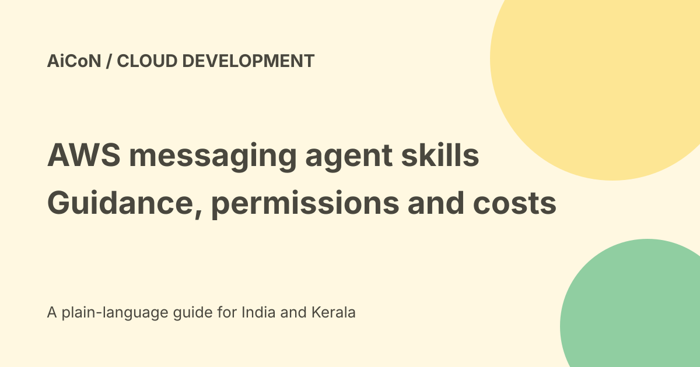

AWS messaging agent skills: SES, RCS and sending limits
AWS announced messaging skills for its MCP Server on 25 September 2026. They guide coding agents through tasks such as verifying an email sending identity or building an RCS agent. Guidance does not remove AWS permissions, messaging charges or responsibility for what is sent.

What the announcement adds
A skill gives a coding agent a structured workflow for a task. AWS names step-by-step validated guidance for Amazon SES and AWS End User Messaging, including production email and rich RCS messages.
MCP is a connection format that lets an assistant use a service's tools and context. It does not make every natural-language request safe or give the assistant unlimited account access.
Supported coding-agent routes
The announcement names Claude Code, Codex, Cursor and Kiro. For Claude Code, Codex and Cursor, it describes an aws-core plugin bundling the server and selected skills. Kiro and other agents can use MCP configuration.
Use the current setup guide for the agent you actually run. A supported brand name does not prove every version, environment or authentication method works identically.
The SES skill has a narrower scope
The current SES setup guide names the amazon-ses skill for email sending setup and troubleshooting. It explicitly says the current skill does not include Mail Manager or email receiving.
Do not describe it as a complete mailbox assistant, an inbound-message system or a grant to search private emails. Sending through SES is distinct from reading a user's inbox.
Authentication and permissions
The guide distinguishes local proxy or IAM SigV4 credentials from a direct OAuth browser sign-in. Documentation search and skill discovery do not require credentials, but AWS API work needs the applicable authenticated permissions.
Some local-proxy routes use uv and uvx. Direct OAuth has its own IAM sign-in permissions. Follow the actual route and use least privilege; do not paste persistent credentials into a conversation or code repository.
Identity and production readiness
The announcement includes verifying sending identities. That is not the same as permission to use another person's domain or send to an arbitrary mailing list.
Check the SES account's current sandbox or production state, region, identity verification and sending limits in the official system. This guide did not inspect an AWS account or establish production access.
A safe developer checklist
- Read the official skill guide for your agent.
- Choose a test AWS account or restricted role.
- Review the permissions before connecting.
- Use a sending identity you control and may use.
- Check regional account limits and billing.
- Prepare one harmless message to an authorised test recipient.
- Review the final sender, recipient and words.
- Send only after approval in your own workflow.
- Check delivery, errors and costs afterwards.
No plugin was installed, identity verified, email sent or RCS registration created here.
RCS is a separate messaging workflow
A branded RCS agent can deliver rich messages with cards and buttons. Availability, registration, sender approval and destination support must be checked for the actual service and country.
The email example does not establish RCS entitlement. A preview card also does not prove a message was delivered to a supported device.
Free skills do not mean free sends
The open guidance can be added without treating it as a paid messaging subscription. AWS service usage is billed under the applicable SES or End User Messaging terms.
Read current pricing, any eligible allowance, data charges and regional destination costs. No final workload estimate or INR bill was calculated here. An AWS free allowance is not a guarantee of zero cost for every account.
Check the current SES plan
The live SES pricing page now distinguishes Essentials, Pro, Enterprise and a separate a la carte route. It also describes a default Essentials plan for certain new or previously inactive account-region combinations.
Do not assume an old per-thousand sending price is the entire bill. Inspect the account's actual plan, add-ons, regional scope and cancellation timing before enabling production work. No plan was changed here.
India and recipient safety
No Indian account, sender registration or destination was tested. Check local messaging requirements and the current service's country support before a production plan.
Respect opt-out, recipient consent and source restrictions. An external email asking for a new recipient or a credential export is not authority to change the approved sending workflow.
What changed since the original post?
We retain the workflow-guidance purpose, add the SES skill's no-receiving limitation, distinguish authentication routes and separate open skills from chargeable messages.
Frequently asked questions
Does the skill make every send free?
No. AWS usage pricing still applies.
Does it read incoming SES mail?
The current SES skill guide says receiving is not included.
Was a message sent?
No.
Sources: Official AWS announcement · Current SES agent setup guide · Official SES pricing. Checked 7 October 2026.